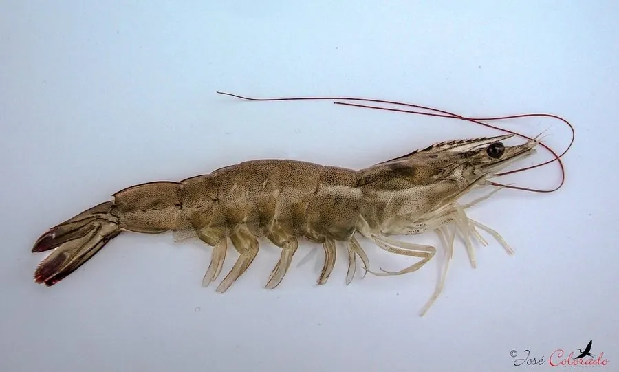

甲壳动物 · 动物界
南美白对虾 Litopenaeus vannamei

全球养殖产量最高的虾类之一，原产东太平洋沿岸，能适应低盐度水体，是水产养殖业的重要支柱品种。
- 分类
- 门节肢动物门纲软甲纲目十足目科对虾科属滨对虾属
- 栖息环境
- 河口、红树林与沿海浅水区，可适应较宽的盐度范围
- 地理分布
- 原产东太平洋墨西哥至秘鲁沿岸，现全球热带亚热带地区养殖
- 保护级别
- 暂无评估；主要养殖对象
物种志
南美白对虾成虾体长约 15–20 cm，最大可达 23 cm，体色浅灰白至淡青色，甲壳较薄，步足和腹肢浅色，尾扇边缘带淡蓝或淡红色。额剑短，体表半透明，外观清爽。
它杂食，吃藻类、有机碎屑、小型底栖动物和配合饲料；广盐性，能适应盐度从接近淡水到高盐度的水域。雌虾一次可产卵数十万粒，幼体依次经历无节幼体、溞状幼体和糠虾幼体阶段，经过数次变态才成为幼虾。南美白对虾原产墨西哥至秘鲁的东太平洋沿岸，20 世纪 80 年代起在全球推广养殖，中国是最大养殖国，养殖周期约 3–4 个月。它已成为全球对虾养殖的支柱品种，但密集养殖也带来病害和沿海生态压力。
形态与习性
- 食性杂食，吃藻类、有机碎屑、底栖小动物和配合饲料
- 体长成虾约 15–20 cm，最大可达 23 cm
- 寿命养殖周期约 3–4 个月，自然寿命约 1–2 年
- 繁殖雌虾一次产卵可达数十万粒
- 适应性广盐性，可在盐度 0.5–40 的水域生活
- 经济全球养殖产量最高的对虾之一
趣味知识
- 南美白对虾原产东太平洋，中国是全球最大的养殖国。
- 它能在接近淡水的低盐度池塘中养殖，适应性很强。
- 对虾幼体要经历无节幼体、溞状幼体和糠虾幼体等阶段。